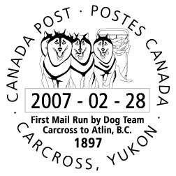

Carcross PO pictorial cancel
First Mail Run by Dog Team – Carcross to Atlin, B.C. – 1897 · 1st sled dog team
- Status
- Expired
- Run dates
- 2005-01-01 to ?
- Design
- "First Mail Run by Dog Team / Carcross to Atlin, B.C. / 1897"; sled dog team
- Ink colour
- Black
- Designer
- Unknown
- Post office
- Carcross PO
14 Bennett St
Carcross, YT
Y0B 1B0 - Subjects
- animal, mammal, canine, dog, sled dog team, mail run, postal history
This cancel is retired, so the post office can no longer apply it. Covers with it turn up from dealers and other collectors.
 Carcross PO1st caribou
Carcross PO1st caribou Carcross POHouse
Carcross POHouse Carcross POPost office
Carcross POPost office Carcross POTrain
Carcross POTrain Carcross POAircraft
Carcross POAircraft Carcross POHaunted Canada
Carcross POHaunted Canada